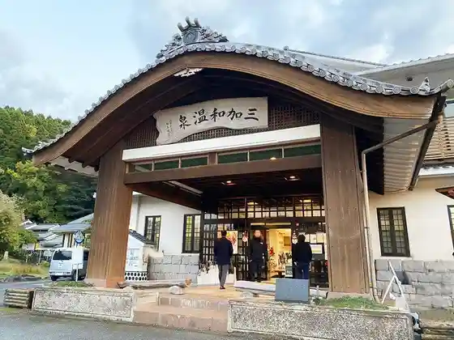

Roadside Station Kikusui Kikusui Roman Kan
Nagomi, Kumamoto · 0968-86-3100 · Official / source link
Pan no Wa
Nagomi, Kumamoto · 0968-57-7589 · Official / source link
Mikawa Onsen Nagomi no Yu (Furusato Koryu Center)
Nagomi, Kumamoto · 0968-34-2249 · Official / source link

Kaki Nai Shoten CAFE (Kakiuchishoten Kafe)
Nagomi, Kumamoto · 090-5743-0253 · Official / source link
Kuriyama Onsen Kurenai Sanzashi
Nagomi, Kumamoto · 0968-34-4233 · Official / source link
Jun Sai SOBA Tsunejiro Iori
Nagomi, Kumamoto · 0968-42-4128 · Official / source link
Higo Minka Village
Nagomi, Kumamoto · 0968-86-4564 · Official / source link
Nagomi Eda Kawa Kanu Campground
Nagomi, Kumamoto · 0968-82-8414 · Official / source link
Mimi no Kamisama (Yanagawa Yu Oinosuke no Haka)
Nagomi, Kumamoto · 0968-34-5725 · Official / source link
Me no Kamisama
Nagomi, Kumamoto · 0968-34-5725 · Official / source link
Ha no Kamisama
Nagomi, Kumamoto · 0968-34-5725 · Official / source link
Sei Koshi no Kamisama (Shichiro Kami)
Nagomi, Kumamoto · 0968-34-5725 · Official / source link
Inochi no Kamisama
Nagomi, Kumamoto · 0968-34-5725 · Official / source link
I no Kamisama
Nagomi, Kumamoto · 0968-34-5725 · Official / source link
Teashi no Kamisama (Tateyama no Ashide Kojin)
Nagomi, Kumamoto · 0968-34-5725 · Official / source link
Tanaka Castle Ruins
Nagomi, Kumamoto · 0968-34-3047 · Official / source link
Tonkararin
Nagomi, Kumamoto · 0968-34-3047 · Official / source link
Etafunayama Burial Mound
Nagomi, Kumamoto · 0968-34-3047 · Official / source link
Midori Sai Kan
Nagomi, Kumamoto · 0968-34-4222 · Official / source link
Yu Tei Jogen no Gatsu
Nagomi, Kumamoto · 0968-42-4126 · Official / source link
Wasantaranka
Nagomi, Kumamoto · 080-4314-5567 · Official / source link
Kikusui Village
Nagomi, Kumamoto · 0968-86-5055 · Official / source link
NAME LESS
Nagomi, Kumamoto · 0968-86-3030 · Official / source link
O Musubi Library
Nagomi, Kumamoto · 090-9655-6322 · Official / source link
Resutoran (Usagito Kame)
Nagomi, Kumamoto · 0968-75-8022 · Official / source link
Shichiro Shindai Matsuri
Nagomi, Kumamoto · Official / source link